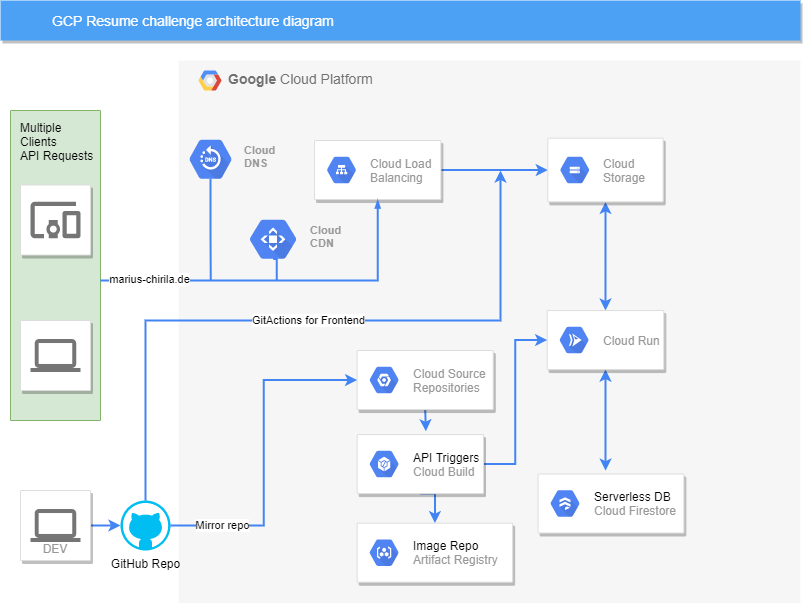

# A Cloud Guru Challenge
29 September 2021
High level of challenge
Hi everyone. First and foremost, why this challenge ? Because while on my journey to switch to back to the technical side, I stumbled upon this gem where you would dip your toes into so many different tools and technologies and get hands-on experience. This is certainly not achievable through only certifications and it's a must to get a accustomed and have a cloud fluency. This is a reccuring challenge by the wonderful people at ACloudGuru(previously AWS,Azure) and this installement in GCP set up by Mattias Andersson. You can check it out for more in depth details at: cloudguruchallenge-your-resume-on-gcp However, for tl;dr, this challenge would have us build our own personal branding site/resume because let's be honest, a static .pdf certainly wouldn't stand out from the crowd and this is definitely more enjoyable to learn and benefit from it. This should be a static website, hosted on GCP and include Frontend code, an API that calls a serverless DB, all wrapped up in a CI/CD pipeline. Also by having a resume on the web, you can customize, update, improve, much faster and it is more interractive.
Architecture
Frontend
For the front end, this site has been written primarily in HTML, starting from almost a blank sheet,
school Education
Bachelor - Computer Science, Technical University of Timisoara, Timisoara, RO
September 2010 - August 2013
collections_bookmark Certifications/Courses
ITIL Service Operations, Axelos
July 2017
ITIL Service Transition, Axelos
March 2019
Microsoft certified: Azure Administrator Associate, Microsoft
June 2021